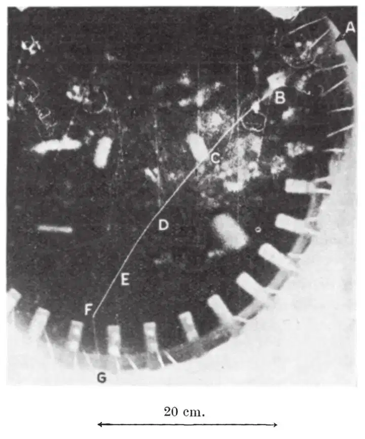
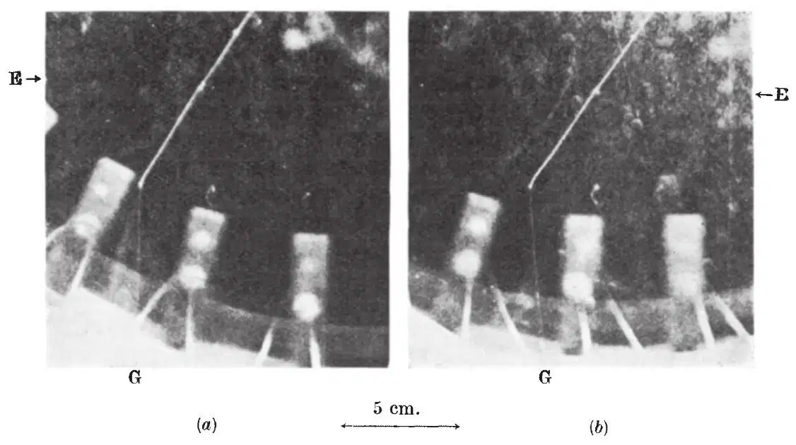
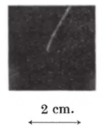
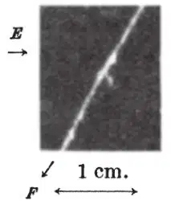

中文
中文E. J. Williams and G. E. Roberts
Editor’s Note
If seeing is believing, then Figure 2b of this paper is a complete demonstration that mesons, thought to mediate nuclear forces between particles such as neutrons and protons, themselves decay into electrons. The tracks exhibited in this paper were made in a cloud chamber, a device filled with nearly super-saturated water vapour and air which can be expanded quickly, thus forming droplets of water wherever there are free electric charges in the chamber. The first author of this paper, Evan J. Williams, was one of the most talented British physicists of his generation. He died at the age of 43. (Since 1940, several different kinds of mesons have been discovered; that described in this paper is now called a π-meson.) 中文
ONE of the outstanding questions regarding the mesotron is that of its ultimate fate. Certain properties of this particle are remarkably like those of the hypothetical particle assumed by Yukawa in his theory of nuclear forces and β-disintegration, and this has led to the view that the two may be identical. Within a rather large experimental error they have the same mass, and both are unstable in the free state, having an average life of the order of 10－6 seconds. The disappearance of the particle of Yukawa’s theory at the end of its life takes place through its transformation into an electron and a neutrino, and it is regarding this that hitherto there has been no evidence of a parallel between it and the mesotron of cosmic rays. In fact, existing experimental evidence has rather gone to show that mesotrons suffer at the end of their life some other fate than befalls the Yukawa particle. 中文
With the object of obtaining information on this crucial point we constructed a large cloud-chamber (24 in. diameter, 20 in. deep) which, with its large sensitive period and volume, might catch a cosmic ray mesotron coming to the end of its range in the gas of the chamber. A recent photograph taken with this shows a mesotron track terminating in the gas as desired. From its end there emerges a fast electron track, the kinetic energy of which is very much greater than the kinetic energy of the mesotron, but is comparable with its mass energy. This indicates that the mesotron transforms into an electron, in which case the remarkable parallel between the mesotron and the Yukawa particle is taken one stage further. In terms of Yukawa’s theory, the phenomenon observed may be described as a disintegration of the mesotron with the emission of an electron, thus constituting the most elementary form of β-disintegration. 中文
Fig. 1 is a reproduction of one of the photographs of the stereoscopic pair. The dense track AF is that of the mesotron, and the faint track FG leaving its end, near the bottom of the chamber, is that of the fast electron. It will be noticed that the latter is comparable in density with the tracks of other fast particles which happened to traverse the chamber in the same region. Fig. 2 is a larger reproduction of the stereoscopic pair, showing only the end portion of the mesotron track and the emergent electron (2a is not in as good focus as 2b). Fig. 3 is a heavily exposed reproduction of the last few millimetres of the mesotron track to bring out its shape though the electron track is thereby nearly lost, and Fig. 4 is an enlargement of the δ-track at E to show more clearly its initial direction. The tracks in the present reproductions are much less distinct than in the original negatives and photographic prints, and this particularly applies to the fast tracks (including FG) and the short δ-tracks, of which there are at least six obvious ones to be seen between C and F on the original negative. 中文

Fig. 1 中文

Fig. 2. a and b are arranged for stereoscopic observation with the naked eye, when usually the left eye sees the right-hand picture. 中文
That the dense track is that of a mesotron follows from its range and curvature, and from the δ-tracks. An accurate estimate of the mass from the curvature is not possible because the scattering which the particle suffers interferes appreciably with the curvature due to the magnetic field. The straightness of FG and of neighbouring fast tracks shows that there was no appreciable distortion from air motion. The radius of curvature,  , at B, measured over AC (~20 cm.), is 70 cm., giving H = 1,180 × 70 = 8.3 × 104. The range beyond B is 33 cm. in the chamber, corresponding to 41 cm. of normal air. These data give a mass, µ, of (250±70) m, where m represents electronic mass. This is of the same order as previous estimates of the mass of the mesotron, and is sufficiently far removed from the mass of the proton (1,840 m) to establish the particle as a mesotron. The number and range of the δ-tracks also indicate mesotronic mass, and rule out a proton. In particular the long δ-track at E, which in the reproduction in Fig. 3 is seen to be directed nearly forward, has a path-range, R', equal to 0.06±0.03 times the remaining range, R, of the heavy particle. This is roughly the range that would be expected for a secondary electron knocked nearly forward by a mesotron with the observed remaining range. It is, however, at least five times greater than the range of the longest δ-track that could be produced by a proton. The latter is approximately (23.4/1,840) R = 0.006 R. Regarding the “scattering” of the track, while it is more pronounced than the average effect expected for a mesotron, it is more compatible with the latter than with a proton or any other known particle. The natural “curvature” of cloud-tracks due to multiple and single scattering is discussed by one of us in a paper now in the press (Physical Review). It is there shown that towards the end of its range—last 5 cm. or so—the natural curvature of a mesotron track may well exceed its magnetic curvature in a field of 1,200 gauss. (The “kink” at D contributes little to the average curvature and is possibly more a thinning of the track on one side than a true deflection. The “single” scattering at C appreciably reduces the overall curvature.) The bending of the track in the last 5 mm. or so (Fig. 3) is of interest. It indicates that the mesotron has come to the end of its range, thus discounting the possibility that the photograph represents the production of a mesotron and an electron by a neutral particle. Against this supposition are also the facts that the long δ-track at E is initially directed forward, and that the δ-tracks are more numerous in the lower half of the track. Both indicate motion of the mesotron towards F. 中文
, at B, measured over AC (~20 cm.), is 70 cm., giving H = 1,180 × 70 = 8.3 × 104. The range beyond B is 33 cm. in the chamber, corresponding to 41 cm. of normal air. These data give a mass, µ, of (250±70) m, where m represents electronic mass. This is of the same order as previous estimates of the mass of the mesotron, and is sufficiently far removed from the mass of the proton (1,840 m) to establish the particle as a mesotron. The number and range of the δ-tracks also indicate mesotronic mass, and rule out a proton. In particular the long δ-track at E, which in the reproduction in Fig. 3 is seen to be directed nearly forward, has a path-range, R', equal to 0.06±0.03 times the remaining range, R, of the heavy particle. This is roughly the range that would be expected for a secondary electron knocked nearly forward by a mesotron with the observed remaining range. It is, however, at least five times greater than the range of the longest δ-track that could be produced by a proton. The latter is approximately (23.4/1,840) R = 0.006 R. Regarding the “scattering” of the track, while it is more pronounced than the average effect expected for a mesotron, it is more compatible with the latter than with a proton or any other known particle. The natural “curvature” of cloud-tracks due to multiple and single scattering is discussed by one of us in a paper now in the press (Physical Review). It is there shown that towards the end of its range—last 5 cm. or so—the natural curvature of a mesotron track may well exceed its magnetic curvature in a field of 1,200 gauss. (The “kink” at D contributes little to the average curvature and is possibly more a thinning of the track on one side than a true deflection. The “single” scattering at C appreciably reduces the overall curvature.) The bending of the track in the last 5 mm. or so (Fig. 3) is of interest. It indicates that the mesotron has come to the end of its range, thus discounting the possibility that the photograph represents the production of a mesotron and an electron by a neutral particle. Against this supposition are also the facts that the long δ-track at E is initially directed forward, and that the δ-tracks are more numerous in the lower half of the track. Both indicate motion of the mesotron towards F. 中文

Fig. 3 中文

Fig. 4 中文
The curvature of the electron track, FG, is very small. Actually there is detectable (Fig. 2b), a small curvature in a direction indicating a positive charge, which is also the direction of the curvature of the mesotron. The photograph thus represents a positive mesotron transforming into a positive electron. So far as it can be estimated, the radius of curvature of FG is 200 cm. ± 50 percent, which in the field of 1,180 gauss (neglecting any distortion due to air-motion) indicates an energy of 70 Mev. ± 50 percent. Taking µ = 200 m, and assuming that a neutrino takes half the energy, the energy of the electron would be 100 mc2 = 50 Mev. 中文
The large energy of the electron shows, quite apart from Yukawa’s theory, that mass has been annihilated—for the mesotron, even if we suppose it has disintegrated before “stopping”, has certainly less than 4 Mev. of kinetic energy. Actually, the large bending of the end of the mesotron track indicates (as already pointed out) that E is the normal end of its range, where it has reached too low a velocity to ionize further. In this connexion it is of interest that an upper limit to the lifetime, τ, of this mesotron, since its entry into the chamber, can be set from the fact that the electron track starts from a point certainly not more than 0.4 mm. from the end of the mesotron track. Assuming the mesotron, after it ceases to ionize, to diffuse with gas-kinetic free path (10－5 cm.) and thermal velocity (106 cm./sec.) this gives an upper limit to τ of (0.042/10－5×106)~2×10－4 seconds. Actually it is likely that a mesotron, when it stops ionizing, has a velocity of at least 107 cm./sec., and a free path considerably greater than gas-kinetic values, so that τ must be much less than the above limit. The average value of τ deduced from the anomalous absorption of cosmic ray mesotrons is of the order of 10－6 seconds. 中文
(145, 102-103; 1940)
E. J. Williams and G. E. Roberts: University College of Wales, Aberystwyth, Dec. 21.